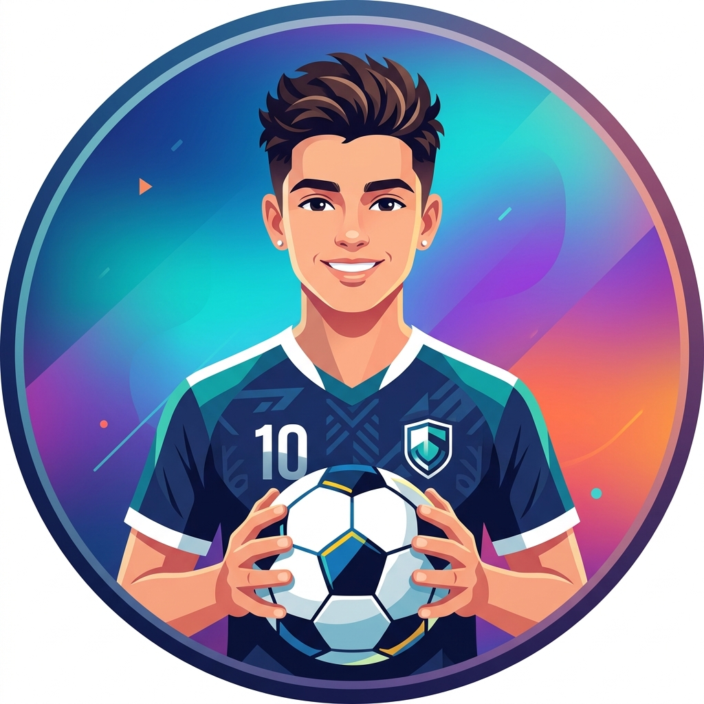

⚽ 得意なこと
私の得意なことはサッカーです！
チームワークとフィールド全体を見渡す視野の広さを活かして、常にベストを尽くします。
プログラミングにおいても、全体像を捉えながらゴールに向かって進んでいく姿勢を大切にしています。
🤖 AIとの向き合い方
AIとはどのような存在か？
私にとってAIは、「知らない知識をどんどん増やしてくれるような存在」です。自分の限界を広げ、新しい視点やアイデアをもたらしてくれる強力なパートナーだと考えています。
今後の向き合い方
AIに完全に頼りすぎるのではなく、「AIに頼るところ」と「自分の力でするところ」をしっかりと見極めることが重要だと思っています。このバランスを大切にしながら、より良いものを生み出すために上手く使い分けて向き合っていきたいです。
🚀 挑戦したいこと
この授業を通して、
「見た人に面白いと思ってもらえるようなアプリ」
を作ることに挑戦したいです。
単なるツールではなく、ユーザーの心を動かし、記憶に残るような魅力的な体験を提供できるようなアプリ開発を目指します。